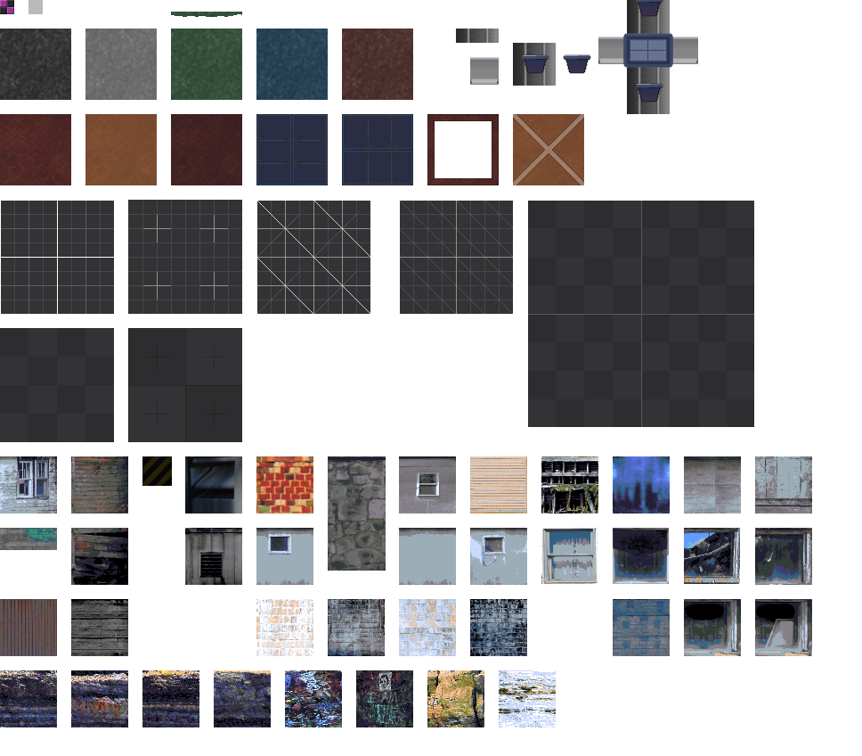

Connection
Join: two sectors must stand flush, their walls one above the other. Click the wall of the first, then the wall of the second (the wall itself highlights green ✔ — clickable). Red ✗ = lines do not overlap.
Creatures
Click a diamond on the map
⚠ Creature data is damaged
Place at the selected point
Clear all creatures
Triggers
The Trigger tool (diamonds in the toolbar): hold LMB and stretch a rectangle. The two diamonds = corners. In Select mode a diamond moves a corner, the rectangle itself moves whole.
Lift curve
01Sin (sine)
The Lift tool: click a sector to create the floor phantom, arrows move the phantom to the arrival spot
Map
Load/export — top right
Log
The action list appears here (also mirrored to the F12 console)
Clear log
No texturing tools yet.
Canvas
Click the canvas to move it to the main window and see the map in its place. Click the map picture to swap back.
Canvas

Reset view
100%
Wheel — zoom, middle or right button — move the canvas.
Click the canvas to move it to the main window and see the map in its place. Click the map picture to swap back.
Drag a rectangle over the canvas to take a group of pixels. Drag inside it to move it, drag a handle to resize it.
Map
Click the picture to bring the canvas back.
Sector texture
Delete
Middle-click a sector to make it the current one; click inside it with the left button to drop the brush there — every click starts a new layer with one sprite. Middle-click empty ground to close the sector. Click a placed sprite to select it, Shift — several layers.
Layers
World layers
Drag in the void to lay a rectangle tiled with the current canvas selection. Click a rectangle to select it, then drag it or its edge. It belongs to the world, not to any sector.
Delete
Show
Reset view
Checks
x: -- y: -- cell: --